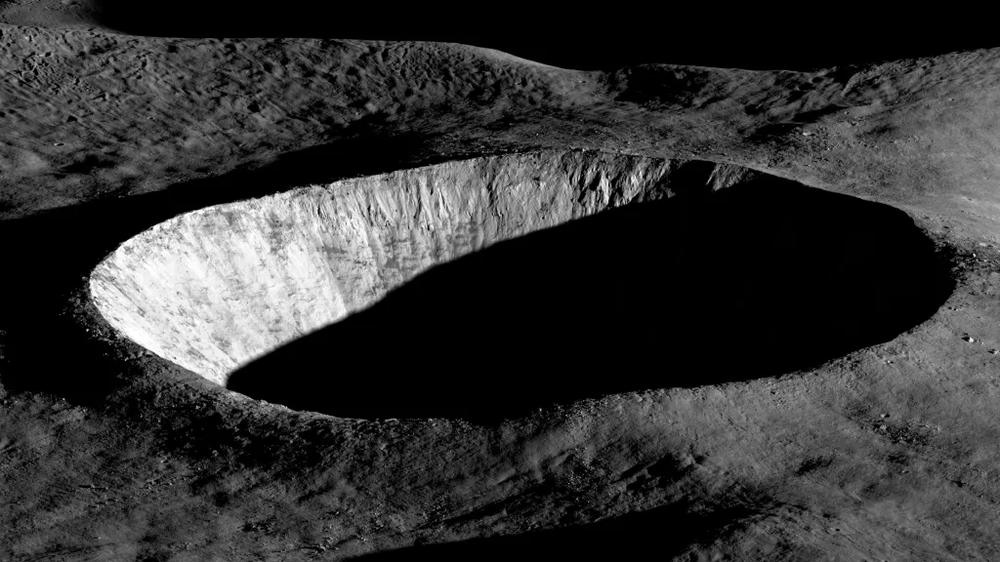

Sixty years of leaving Earth
A vertical lattice of the missions that bent the arc of exploration.
Vostok 1
Yuri Gagarin becomes the first human in space, orbiting Earth once in 108 minutes.
Apollo 11
Neil Armstrong and Buzz Aldrin become the first humans to walk on the Moon.
Voyager 1
Launched to explore the outer planets and now travels through interstellar space.
Hubble Telescope
Revolutionized astronomy with breathtaking images of galaxies and nebulae.
International Space Station
The largest human-made object in orbit and a laboratory for global scientific research.
Spirit & Opportunity
Twin Mars rovers searching for evidence of ancient water on Mars.
Curiosity Rover
Exploring Gale Crater and studying whether Mars could have supported life.
Rosetta
First spacecraft to orbit and land a probe on a comet.
Perseverance Rover
Searching for signs of ancient microbial life and collecting Martian samples.
James Webb Space Telescope
Peering deeper into the universe than ever before, revealing the earliest galaxies.
Chandrayaan-3
India successfully lands near the Moon's south pole, making history in lunar exploration.
Artemis Program
Returning humans to the Moon and preparing for future missions to Mars.
Windows into the cosmos
A collection of breathtaking moments captured across the universe.

Mars Surface

Earthrise - ISS

Moon Craters

Jupiter Storm

Saturn Rings

Deep Space Nebula
Open a channel.
Mission proposals, partnership pitches, or just a hello from your time zone.